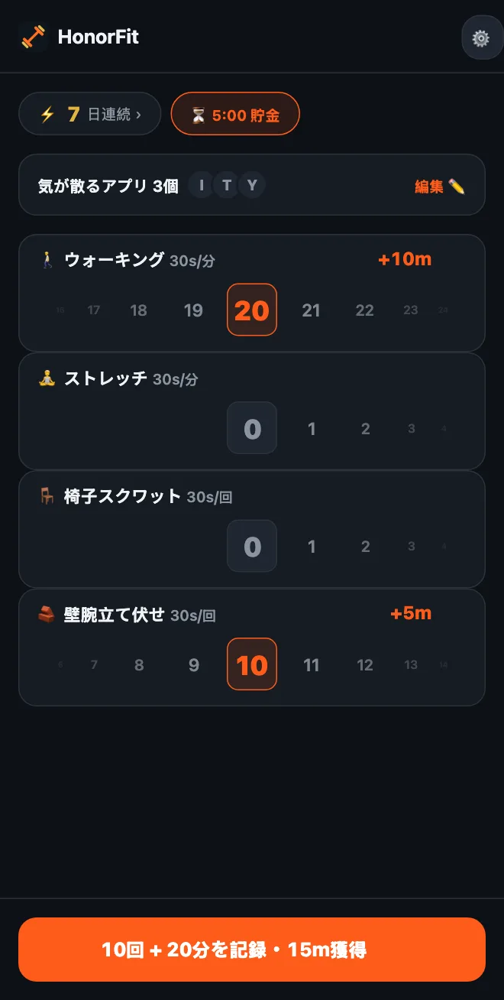

腕立て伏せができない？アプリのロック解除に使える、体にやさしいエクササイズ
どうも！HonorFitは、たいてい腕立て伏せアプリブロッカー（英語）として知られています。何回か運動して自分で記録するまで、アプリはロックされたままです。でも、手首や肩、膝が腕立て伏せを嫌がる人もいるし、一日中デスクワークの人もいるし、今は腕立て伏せどころじゃない、という時期もあると思います。それでまったく問題ありません。
僕にとって、腕立て伏せそのものが目的だったことはありません。目的は、自分とスクロールのあいだに小さな段差を置くこと。それがたまたま体にもいい、というだけです。近所をひと回り歩くのでも、同じくらい役に立ちます。というわけで、自分が無理なくできることを中心にHonorFitを設定する方法を紹介します。
無料版の場合
無料版で使えるのは、最初から入っている4つのエクササイズ（腕立て伏せ、腹筋、懸垂、スクワット）です。この中でいちばん体にやさしいのはスクワットで、1回30秒になります。
それに自己申告制なので、スクワットのフォームを誰かがチェックすることはありません。普通のスクワットがきつければ、椅子から立ち上がってまた座る、でも1回です。腕立て伏せも同じで、壁やキッチンカウンターに手をついてやってもかまいません。何を1回とするかは自分で決めて、正直に記録すればいいだけです。
Proなら：自分で選べる
Pro（米国では月額3ドルまたは買い切り19.99ドル。価格は国や通貨によって違い、ストアにはお住まいの地域の価格が表示されます）では、エクササイズの追加・名前変更・削除と、それぞれの獲得時間の設定ができます。ホーム画面の歯車から、エクササイズカードを開いてください。編集画面の使い方はここに全部書きました。僕なら、こんな種目を考えます。
時間制ワークアウト（「分」で記録）
どのエクササイズでも分に切り替えられますし、⏱のついた候補をタップしてもOKです。ここで合いそうなのは、こんなところです。
- 🚶 ウォーキング。僕のいちばんのおすすめです。たぶん、これ以上ハードルの低いものはありません。
- 🧘 ヨガ。実際にやっているのがストレッチなら、名前をストレッチに変えてもいいですね。
- 🏊 水泳と🚴 サイクリング。どちらも関節にやさしい運動です。
- 🪷 瞑想。運動ではありませんが、候補に入っています。静かな10分とTikTokの10分なら、なかなかいい交換だと思います。
時間制ワークアウトは1分あたりアプリ時間30秒から始まるので、20分のウォーキングで10分です。ホイールは1分単位で、一度に100分まで記録できます。
デスクでもできる動き（「回数」で記録）
＋ エクササイズを追加をタップして名前を入力します。オフィスや狭い部屋でもできて、道具のいらないものをいくつか挙げておきます。
- 椅子スクワット（椅子からの立ち座り）：椅子から立ち上がって、また座る。
- 壁腕立て伏せや机で腕立て：壁や、しっかりした机に手をついてやる腕立て伏せ。手をつく位置が高いほど楽になります。
- カーフレイズ：つま先立ちになって、ゆっくり戻す。電子レンジを待っているあいだにもできます。
- その場足踏み：候補のもも上げを、ゆっくりやる感じです。名前は好きに変えてください。
- ヒップリフトとケーゲル体操：静かにできて道具もいらず、ケーゲル体操なら会議中でも誰にも気づかれません。これだけで記事を1本書きました。
キープ系（プランク、空気椅子）
「分」のホイールは1分単位なので、20秒のプランクはあまり合いません。キープ系は回数のままにして、「20秒キープで1回」のように1回の意味を決めるのがいいと思います。プランクも空気椅子も候補に入っています。
それぞれ、どれくらいの価値にする？
新しいエクササイズは1回30秒から始まり、5秒ずつ上げ下げできます。目安をいくつか挙げておきます。
| エクササイズ | 記録方法 | 獲得 | 例 |
|---|---|---|---|
| 🚶 ウォーキング | 分 | 1分ごとに30秒 | 20分歩く = 10分 |
| 🧘 ストレッチ | 分 | 1分ごとに30秒 | 10分 = 5分 |
| 🪑 椅子スクワット | 回数 | 1回30秒 | 10回 = 5分 |
| 🧱 壁腕立て伏せ | 回数 | 1回30秒 | 10回 = 5分 |
| カーフレイズ | 回数 | 1回10〜15秒 | 1回15秒で20回 = 5分 |
| プランク | 回数（20秒キープで1回） | 1回1分 | 3回キープ = 3分 |
どれも、僕が「このくらいが妥当かな」と思う目安にすぎません。正解は、ごまかさずにちゃんと払える数字です。いちばん身につけたい習慣がウォーキングなら、1分あたり1分のように価値を上げてもいいと思います。

そのまま使える組み合わせ
- デスクワークの日：椅子スクワット、壁腕立て伏せ、カーフレイズ、ウォーキング。
- やさしめ：ウォーキング、ストレッチ、椅子スクワット、壁腕立て伏せ（上のスクリーンショットがこれです）。
- 落ち着いて：ウォーキング、ヨガ、瞑想。
- 静かな部屋で：ヒップリフト、ケーゲル体操、椅子スクワット、ウォーキング。
ホーム画面にはエクササイズごとにホイールが出るので、3〜4つにしておくのがおすすめです。
それから、ケガや痛み、持病がある場合は、何をしても大丈夫か、医師や理学療法士に相談してください。僕はアプリブロッカーを作っている人間なので、膝のことを聞く相手としては向いていません（笑）
HonorFit Blockerは、iPhoneとAndroid向けの無料アプリブロッカーです。自己申告制で、カメラは使わず、データはスマホの外に出ません。エクササイズのカスタマイズと時間制ワークアウトはPro機能です。万人向けではありませんが、気に入ってくれる人もいたらうれしいです！